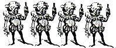

Should up-and-coming bands stick to originals or should they include an occasional off-beat cover? Although the importance of producing and playing original material cannot be denied,
there are benefits to playing an occasional well-chosen cover tune. This is especially tnie for bands who are expanding their audience. A familiar song may be just the thing that's needed to draw in
that new face in the crowd and get them out on the dance door shakin' it. When a band plays a song written by another artist, they are paying tribute to that artist, often revealing their own musical
influences. By staking out this common ground they are establishing a connection between themselves and their audience.
It is important that cover tunes are carefully selected in order for the band to make a good impression. Current popular songs are probably not the wisest choice for a band to reproduce. Instead,
bands may want to consider something that is slightly off the beaten path while at the same time recognizable. Another important consideration is the manner in which the tune is played. It would
seem rather redundant and uncreative for a band to play an exact replica of an original song. The idea behind doing a cover is to introduce the now band's style of playing through means of a familiar
melody. Some bands individualize the sounds of their cover songs no much, however, that they eventually change the lyrics and call the song their own. The cover song can serve as a vehicle for the
up-and-coming band to catch the audience's attention and give the audience a way to assess their skill and potential.
Patricia Headstrong is a sweet-tongued Bourbonite from Connecticut whose interests include infantile Puerto Rican gangsters and wild-eyed drummers.
Erich and I would like to thank all of our friends who have supported the Procrastinator and Valium Effort in their fruitful endeavors.
This month's Procrastinator turned out to be, well read it and see for yourself. Valium Effort fans will he somewhat thrilled in their stuporous slam to know that a Valium Effort CD called
'Menace II Sobriety' is due out as soon as we make our first million...but don't hold your breath.
-MAX
In todays's modern world, 'milking' something for all you can is seen as a negative, even parasitic, behavior. But in an agrarian society, having your own cow to milk as you please means status. A good cow means security.
And just as it's part of nature's plan that certain mammals, at remain times, produce life giving milk, it's also part of nature's plan that human beings should sustain and enrich each other.
We shouldn't feel guilty about accepting liquid commodities from each other. And if you worry that you may have taken advantage of someone, just look at it like this: you can't be there to protect this person all the time,
and if they choose (at least semi-lucidly) to squander their resources on you, then you're probably fulfilling a part of their personal drama - and if is wasn't you riding off in the sunset with a pint of buttermilk,
it would be someone else.
MORAL FOR WOMEN: Why buy milk when you can have the cow?
MORAL FOR MEN: Give a girl a glass of milk and she'll drink for the day. Give her a cow and she won't need you anymore.
Life on the farm was all it was cracked up to be and more - about 50 lbs. more. The Mud Band escaped to the Czuj (pronounced "Soo-eee") farm to tape their new release.
The Mud's stay on the farm was chock-full of fun, flies, recording, and a hell of a lot of food. Band members were quoted saying, "We gained a lot more than experience at the farm."
The retired Mrs. Czuj spends most of her time promoting community events and keeping her husband, a retired sheriff, out of jail. However, when the Mud is in town, she concentrates
her efforts on cooking. A masterful chef of homestyle farm cooking, Mrs. Czuj prepares enough food to feed a busload of stoned Homer Simpsons. The Mud Band, usually pro-drug free (or pro free-drug)
was questioning whether there was something funny In the food, because they were unable to move after most meals. The questions were later cleared up when the band learned that the food contained enough
cholesterol to kill a healthy horse. "We really appreciated all the food. It
inspired our creativity when we woke up from our afternoon naps." said the bloated Don Martin as he searched through the local Salvation Army for a bigger pair of golf shorts. The Mud's chopsy guitar player
Marc Czuj insists his mother usually doesn't cook much, bus later admitted he prefers her banana cream pie to her blackberry pie. Other band members were too full to comment. The band added quite a lot of girth
to their repertoire, and found a little time to do some recording between meals. The time at the farm was very valuable and great fun for the Mud, who returned to NYC for a show at Flannery's looking lethargic,
tired and a bit overweight. Band morale is once again high because of the new diet exercise program, and the Mud Band is looking forward to participating in the Greenfield Follies, and spending more quality time
at the Czuj Farm in the future.
—Dr. John Spleef, Undercover correspondent with the Mud
A drug movie for the nineties, an odyssey of sin and redemption, with a tour-de-force performance by Harvey Keitel. This is the movie you can't wait to show your grandchildren and drool on them saying, "See? See? This is how it really was!" Keitel plays a heavily hallucinating cop who drifts through his day shooting up, snorting, smoking, gambling and drinking, not to mention dancing naked and sexually harassing minors. If all cops got away with this, I'd sign up right away! The plot concerns his questionable attempt at redemption while "investigating" the torture/rape of a nun in Spanish Harlem. What occupies Keitel's mind more, though, is the fate of the Dodgers in the National League playoffs, on whom he's bet a small fortune. The whole movie seems like it's on drugs; it offers the audience a good contact buzz. Keitel's character is atypical of the usual shoot'em up and car chase movie cop in that he is virtually indistinguishable from the villains. He has no hardass sergeant who suspends him for insubordination. He has no honest, hardworking partner or spouse to play the pro-sobriety/decency role. His only love interest is the heroin he smokes with his junkie girlfriend. We watch Keitel sway back and forth, his face suffused with stoned ecstasy. The movie floats around in a haze, and when our hero hallucinates Christ, it not only comes as no surprise, it's hysterical. Harvey Keitel is a dynamo that more than makes up for the film's flaws (The steady-cam man's shakes, the rape victim nun who looks like she just came off a Cosmopolitan magazine cover). Keitel takes his Martin Scorsese school schtick of tough guy Italian mobster to ludicrous heights and hangs up there for the whole picture!!! Rent it with a friend, a bottle and whatever else you can get your hands on.
2
The Procrastinator September, 1993